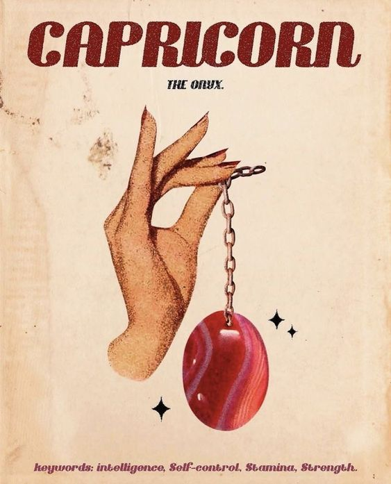

Personality Traits:
Capricorn, represented by the Goat, is known for its discipline, practicality, and ambition. Ruled by Saturn, the planet of responsibility and discipline, Capricorns are the strategists and leaders of the zodiac. They possess an innate sense of purpose and are driven by their goals and the desire to achieve. Capricorns are known for their patience, persistence, and hard work, often building a reputation for being the most determined and ambitious among their peers.
Capricorns value stability and are highly reliable, often taking on responsibilities from a young age. They have a practical approach to life, making decisions with careful consideration and a long-term perspective. Despite their serious demeanor, Capricorns have a dry sense of humor and enjoy moments of relaxation and enjoyment, especially when the fruits of their labor are realized.
Personality Traits:
- Disciplined and Practical: Capricorns approach their goals with discipline and practicality, often demonstrating an unmatched work ethic.
- Ambitious and Goal-Oriented: They possess a strong ambition and are always setting and striving towards new goals.
- Patient and Persistent: Capricorns exhibit great patience and persistence in their endeavors, understanding that success takes time.
- Reliable and Responsible: Known for their reliability, Capricorns are often the ones others turn to when in need of support or guidance.
Likes:
Capricorns enjoy activities that lead to personal and professional growth. They have a keen interest in pursuing knowledge that enhances their skills and expertise. Capricorns appreciate tradition, quality craftsmanship, and the finer things in life that reflect their hard work and success. They value close, meaningful relationships that are built on mutual respect and understanding.
Career and Ambitions:
Capricorns excel in fields that require discipline, organization, and leadership. They thrive in environments where their hard work and dedication can lead to tangible outcomes and recognition. Careers in management, finance, administration, and law are well-suited to Capricorn's meticulous and structured approach. Their ambition often drives them towards roles that offer long-term career growth and the opportunity to rise to the top of their field.
I Recommend watching this!
Get to know your fellow Capricorn friends more!